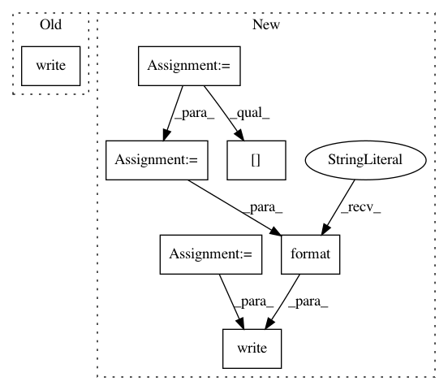

8bafae2ee7044529543768eec63d8460d894f5c6,train.py,,validate,#Any#Any#Any#Any#Any#Any#,163
Before Change
t.set_postfix(loss="{:.2f}".format(loss_meter.avg), refresh=False)
val_loss = loss_meter.avg
t.write(desc + " | valid loss {:2.2f} | valid ppl {:3.2f}"
.format(val_loss, math.pow(2, val_loss)))
// update and return the learning rate
return val_loss
After Change
max_positions=args.max_positions,
skip_invalid_size_inputs_valid_test=args.skip_invalid_size_inputs_valid_test)
loss_meter = AverageMeter()
extra_meters = collections.defaultdict(lambda: AverageMeter())
desc = "| epoch {:03d} | valid on \"{}\" subset".format(epoch, subset)
with progress_bar(itr, desc, leave=False) as t:
for _, sample in data.skip_group_enumerator(t, ngpus):
loss_dict = trainer.valid_step(sample)
loss = loss_dict["loss"]
del loss_dict["loss"] // don"t include in extra_meters or extra_postfix
ntokens = sum(s["ntokens"] for s in sample)
loss_meter.update(loss, ntokens)
extra_postfix = []
for k, v in loss_dict.items():
extra_meters[k].update(v)
extra_postfix.append((k, "{:.4f}".format(extra_meters[k].avg)))
t.set_postfix(collections.OrderedDict([
("loss", "{:.2f}".format(loss_meter.avg)),
] + extra_postfix), refresh=False)
val_loss = loss_meter.avg
fmt = desc + " | valid loss {:2.2f} | valid ppl {:3.2f}".format(
val_loss, math.pow(2, val_loss))
fmt += "".join(
" | {} {:.4f}".format(k, meter.avg)
for k, meter in extra_meters.items()
)
t.write(fmt)
// update and return the learning rate
return val_loss
In pattern: SUPERPATTERN
Frequency: 3
Non-data size: 7
Instances
Project Name: pytorch/fairseq
Commit Name: 8bafae2ee7044529543768eec63d8460d894f5c6
Time: 2017-10-19
Author: myleott@fb.com
File Name: train.py
Class Name:
Method Name: validate
Project Name: senarvi/theanolm
Commit Name: 91184b6bdcdbce3a37cc91a54801b98356910849
Time: 2015-11-22
Author: seppo.git@marjaniemi.com
File Name: theanolm/commands/score.py
Class Name:
Method Name: _score_text